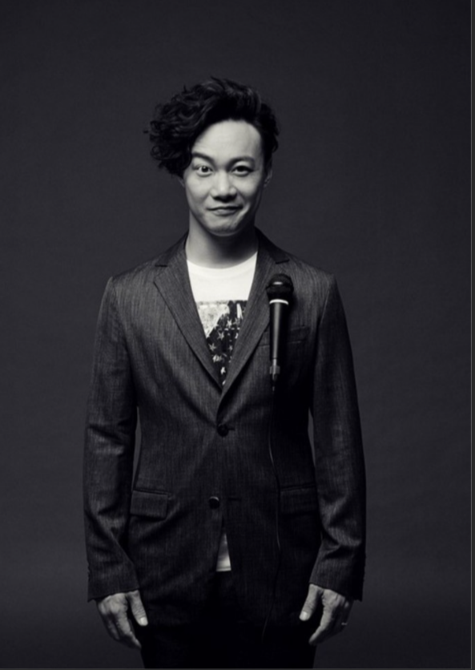
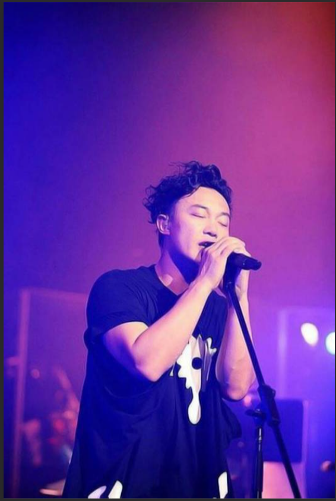

陈奕迅
陈奕迅（英语：Eason Chan Yick-shun，1974年7月27日－），
香港流行音乐极具代表性的男歌手，同时也是一名演员。他被《时代杂志》形容为带领广东音乐潮流
及影响香港乐坛风格的人物，1995年因获得第14届TVB全球华人新秀歌唱大赛冠军而正式入行，至今
已发行超过40张专辑。2010年，入选全球华人音乐殿堂—中国华语金曲奖“30年经典评选”，成为90年
代出道歌手唯一代表。
重要事件
- 2005年，推出的大碟《U87》被《时代杂志》推选为五大亚洲最值得购买的唱片之一
- 2010年，入选全球华人音乐殿堂—中国华语金曲奖“30年经典评选”，成为90年代出道歌手唯一代表。
- 2018年，凭国语专辑《C'mon In~》拿下29届金曲奖“最佳国语男歌手奖”及“年度专辑奖”
- 2008年，MTV日本音乐录像带大奖台湾地区最佳BuzzAsia奖”等等。
- 2012年，于O2体育馆举办《DUO 陈奕迅2012演唱会》伦敦站，成为首位站上O2 Arena的华人歌手，
- 2019年，凭《L.O.V.E.》入围金曲奖第30届年度专辑奖，也是唯一的粤语专辑。
成就和荣誉
- 10 次夺得“叱咤乐坛男歌手金奖”（2001-02、2005-07、2009-13）
- 16 次夺得“叱咤乐坛男歌手奖”（1999-2003、2005-15）
- 9 次夺得“叱咤乐坛至尊唱片大奖”（1998《我的快乐时代》、1999《天佑爱人》、2001《Shall We Dance? Shall We Talk!》、2002《The Line-Up》、2005《U87》、2007《Listen To Eason Chan》、2009《H³M》、2010《Time Flies》、2013《The Key》）
- 9 次兼连续 9 年无间断获得“叱咤乐坛我最喜爱的男歌手”（2005-13）
- 5 次夺得“叱咤乐坛我最喜爱的歌曲大奖”（1999〈幸福摩天轮〉、2000〈K歌之王〉、2005〈夕阳无限好〉、2010〈陀飞轮〉、2013〈任我行〉）
- 7 次夺得“至尊歌曲大奖”（2000〈K歌之王〉、2005〈夕阳无限好〉、2009〈七百年后〉、2012〈重口味〉、2013〈任我行〉、2015〈无条件〉、2016〈四季〉）
- 18 次夺得“叱咤十大”（1998-2003、2005-13、2015-16、2018）
主要作品
| 序号 |
歌曲 |
| 01 | 安守本分 |
| 02 | K歌之王 |
| 03 | 低等动物 |
| 04 | Lonely Christmas |
| 05 | Shall We Talk |
| 06 | 大开眼戒 |
| 07 | New Order |
| 08 | 明年今日 |
| 09 | 夕阳无限好 |
| 10 | 裙下之臣 |
| 11 | 最后的嬉皮士 |
| 12 | 白玫瑰 |
| 13 | 黑择明 |
| 14 | 不如不见 |
| 15 | 富士山下 |
| 16 | 粤语残片 |
| 17 | 心深伤透 |
| 18 | 神奇化妆师 |
| 19 | 张氏情歌 |
| 20 | 完 |
| 21 | 那些让你死去活来的女孩 |
| 22 | 四季 |
| 23 | 陪你度过漫长岁月 |
生活照


生平
陈奕迅曾就读圣若瑟小学，中学时因为父亲陈裘大为高级公务员，自中学开始与哥哥陈泽迅获政府津贴到英国唐德塞中学读书，大学时期在金士顿大学修读建筑学及四年正统音乐课程。
于其间考得英国皇家音乐学院八级声乐证书（八级为业余最高）。
1995年暑假期间回香港参加TVB及华星唱片合办的第14届新秀歌唱大赛，演唱张学友的歌曲《望月》，在多个环节均获得高评分，成为该届冠军，随即跟华星唱片公司签下歌星合约。